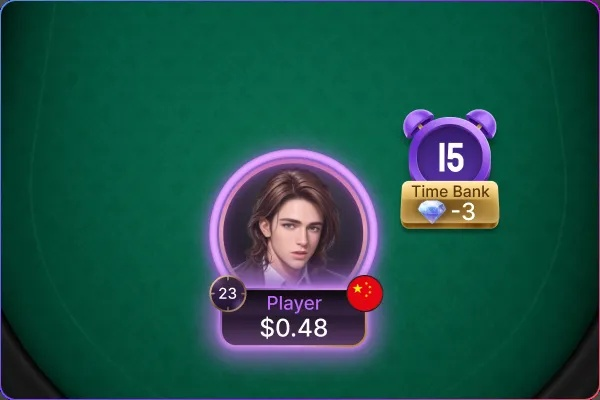
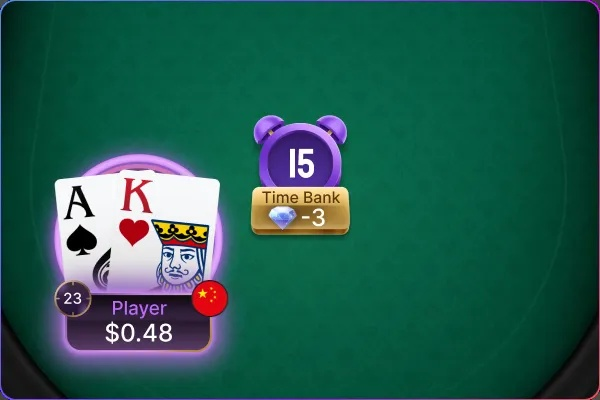
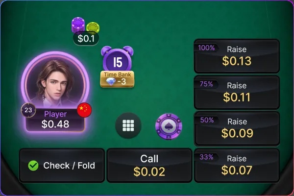
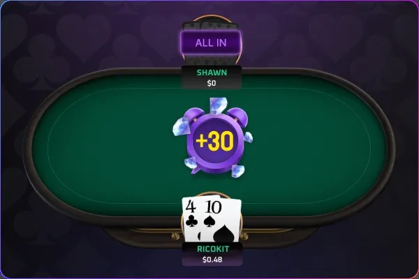

時間銀行
關鍵時刻，從容決策
時間銀行掌握每一次抉擇
時間銀行可在一般決策時間結束後，自動提供額外思考時間，讓你從容分析牌局。
在關鍵局面保留更多思考空間，做出更精準的判斷，提升每一次決策品質。
功能介紹

1. 時間銀行（Time Bank）是玩家於牌局中的一個額外思考時間庫存，讓你在重要或困難的局面中有更多時間思考下一步行動。
2. 每位玩家平時都有常規的決策時間（例如 15 秒）
3. 如果在規定時間內尚未行動，系統會自動啟用「時間銀行」
時間銀行的使用方式

• 點選啟用: 常規時間剩7秒時，時間銀行啟動按鈕會出現於鬧鐘下方
• 可多次使用: 一場牌局中可多次啟用，直到額度用完
• 額度上限: 每位玩家擁有相同上限秒數（如 最多30秒時間庫存）
• 補充方式: 有些平台每玩一定手數或進入決賽桌會補充時間銀行秒數
範例流程

1. 輪到你行動 →常規思考時間倒數開始
2. 你還沒決定 → 剩7秒時，跳出「時間銀行」按鈕，點選後常規
時間消耗完就會開始消耗時間銀行庫存時間
3. 你在時間銀行內做出決定（如全押 / 棄牌）
4. 消耗的時間將從你的總時間銀行中扣除
時間銀行何時最有用？

1. 對手 All-in，你在考慮是否跟注
2. 關鍵轉牌，你需要時間判斷勝率
3. 對戰陌生玩家，需要時間分析下注習慣
4. 高額賽事，決策需更謹慎
時間銀行實際使用:
公共牌桌:
• 時間上限: 30s
• 補充: 免費補充，但需在第一次使用後29s的下一局開始，在同桌號打滿40局才能補滿30s
• 詢問使用: 思考時間剩下7秒的時候才會出現
私人牌桌:
• 時間上限: 30s
• 補充: 扣除3鑽無限補充
• 詢問使用: 立即